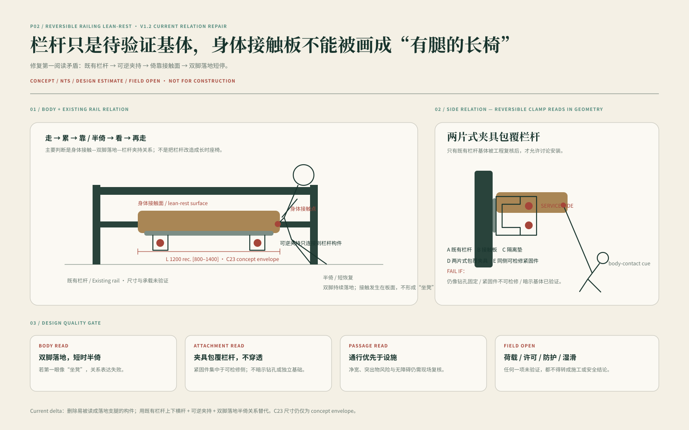
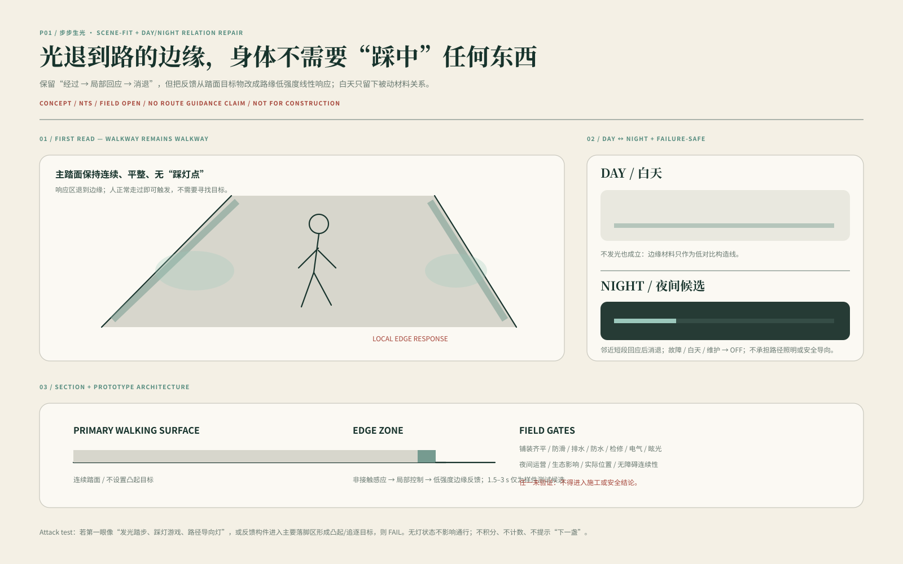
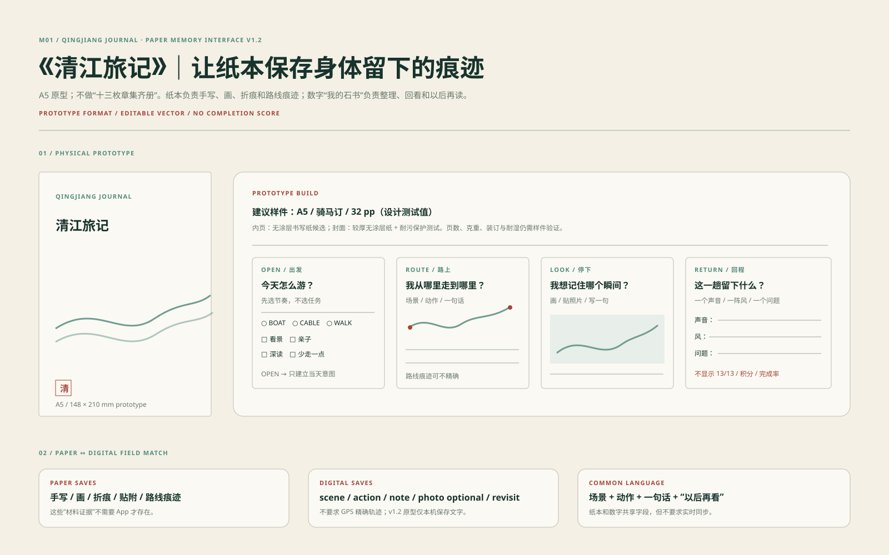

CONTENT ENGINE / NOT BACKGROUND TAXONOMY
从地方叙事，
回到眼前山水。
清江石书不要求游客先完成一套知识学习。先看江、山、峰、植物、岩壁与路径，再决定是否打开一个故事、一段比较或一种地方解释。
R07 仓禀峰／仓廪峰R09 盐水女神峰R12 廪君峰地名与故事 ≠ 历史现场证明

从水面、索道到峰林步道，把地域文化、十三印、游戏地图、身体休息、数字阅读与离场记忆重新放回一次完整旅行。内容可以选择，路线、服务和回程不依赖完成率。
文化不做成独立知识墙。地方故事、地名、传统山水观与自然观察进入适合发生的场景，再由十三印、App、听读与记忆载体选择性展开。
清江石书不要求游客先完成一套知识学习。先看江、山、峰、植物、岩壁与路径，再决定是否打开一个故事、一段比较或一种地方解释。
保留地方命名、传说与文本传统，同时把未确认的现场等价关系保持开放。
先比较形态与关系，再进入自然解释；物种、岩性、年代与精确成因不从外观反推。
传统环境观念作为文化阅读，不承担科学因果、工程判断或安全依据。
BOAT、CABLE、WALK 改变观看尺度；RETURN 保证游客始终知道怎么离开。十三印不拥有路线主权，手机也不是通行证。
江面、峡谷、声音和长距离观看。作为 access / view variant，不强行成为每个人的固定一站。
先承担交通与回程，再提供移动视点。R01 不设置强制 UI、长解释或必做触发。
进入多分支 / 回环步行网络，身体开始面对坡地、植物、岩壁、疲劳、停留与转折。
纸图、人工服务、标识与数字服务互补。UNKNOWN 不伪装为正常开放，CLOSED 不被游戏状态覆盖。
游戏感来自附近内容、个人轨迹和轻量发现；路线、安全、关闭和回程仍由真实服务系统决定。
TODAY / ROUTE / READ / MY BOOK 构成数字体验主结构；Service / Return 永久可达。数字内容能出现、减弱或消失，不重新夺走真实景观的第一阅读。
它们不再平均占据十三个任务卡，而是按真正适合发生的文化、观察、身体和空间问题进入旅行。
看完整河谷 → 恢复 → 可选比较/解释 → 继续或返回。数字解释只在游客需要时出现。
窄处先通过，再解释。游戏、长文本和强 UI 撤退；身体、路线、出口与 Return 获得最高优先级。
R06 通过开阔视野支持观察、恢复与比较；R13 在高注意力空间主动减少内容。Scene Interaction 的价值来自环境与身体关系，而不是统一交互组件。

先比较江、两岸、坡面与视野中的相对关系；需要时才打开简化剖面、内容解释与短恢复支持。

追逐、搜寻、计时、长解释关闭；路线、出口、风险边界与 Return 保持可见。该视觉是远程概念关系图，不是现场照片或安全证明。
感觉 + 怎么成立。
景观图承担体验第一读；剖面/身体/节点图承担尺度与关系证明。模型和技术图只有在比文字更清楚时进入 MAIN。
Audience 不做 persona 卡。景观、路线和 Return 保持同一底线，只改变身体支持、注意任务和内容深度。
C23 是技术证明子集，不是整个 Physical 项目。短恢复、步行反馈、长停留与风感候选承担不同身体角色，不能压成一张产品矩阵。

服务性小介入。身体尺度、依附关系和维护概念可以深化；最终位置、承载、基础与现场栏杆条件仍需 FIELD / Engineering 校核。

身体通过 → 低强度反馈 → 淡出 / 关闭。无分数、扫码和任务链；DAY / FAULT / MAINTENANCE 可直接 OFF。
只在真正值得长停留的一处景观条件中竞争 Physical Hero。对象、眩光、拥挤或维护负担一旦抢过清江第一读，就应退场。
自然风是基线；设计只提供低密度、可关闭的感官提示。避免许愿墙、密集悬挂和旅游装饰化。
清江旅记与“我的石书”分别保存纸上的身体痕迹和数字里的选择记录；没有 13/13，也没有强制纪念品清单。

纸本可以独立完成无手机旅程；数字 My Book 保存路线痕迹、识别、选择和再访线索。两者互补，谁都不是谁的备份。
C22 / C23 / Model 进入作品是为了说明“怎么成立”，不是为了把项目变成灰模或工程报告。Technical Proof 必须可见、可读，同时保持从属。
承担 masterplan / network / section 的关系权威；当前不是现场实测 survey。
承担 F01/F02/F03、路线/容量/风险/材料/维护/构造研究；是 validation subset，不是 Physical 全集。
SEC-A 为首选技术剖面；R06 node 与景观并置；Hero clay 只有比线稿更清楚时才进入；overall Axon 保持 SUPPORT。
视觉系统要让真实清江始终是第一读；运动不是静态展板的缩放播放。现有 86 秒影片结构保留为 lineage，但需要把 App、Physical、Memory 和 Return 重新放回旅程。
HERO / REAL QINGJIANG R06 / LANDSCAPE → RELATIONR13 / BODY FIRST
R06 / LANDSCAPE → RELATIONR13 / BODY FIRST RETURN / FAIL-CLOSED
RETURN / FAIL-CLOSED回程不是尾声，而是全程都存在的设计层。疲劳、天气、网络或运营条件变化时，内容密度下降，路线、服务、纸图与无手机路径提升优先级；UNKNOWN 采用 fail-closed，不画成正常开放。